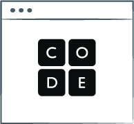

CSS stands for Cascading Style Sheets.

Bootstrap is a free and open-source CSS framework directed at responsive, mobile-first front-end web development. It contains CSS- and (optionally) JavaScript-based design templates for typography, forms, buttons, navigation, and other interface components.
Code.org® is a nonprofit dedicated to expanding access to computer science in schools and increasing participation by young women and students from other underrepresented groups. Our vision is that every student in every school has the opportunity to learn computer science as part of their core K-12 education.